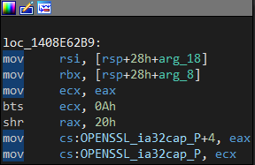
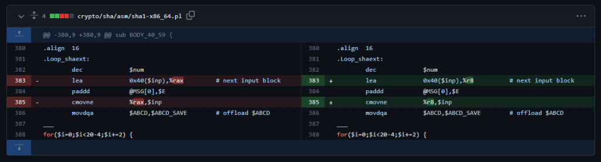
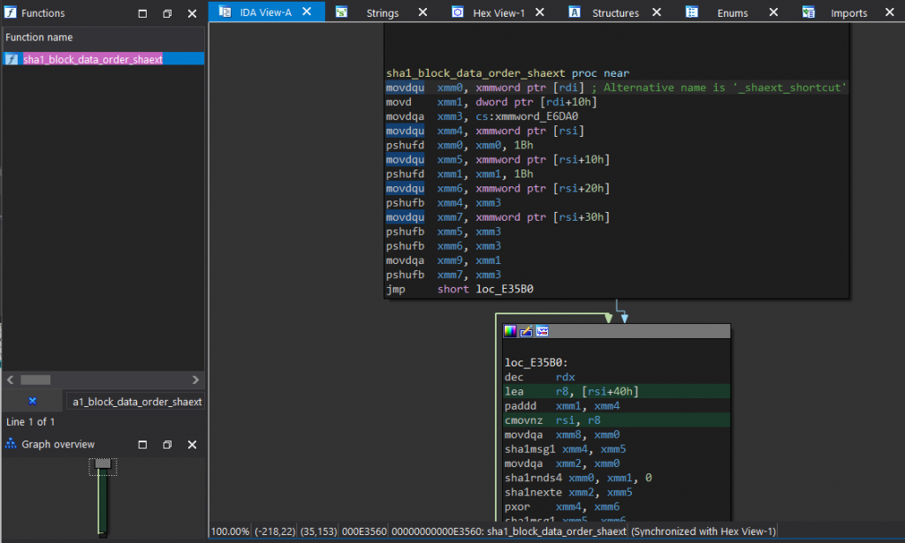
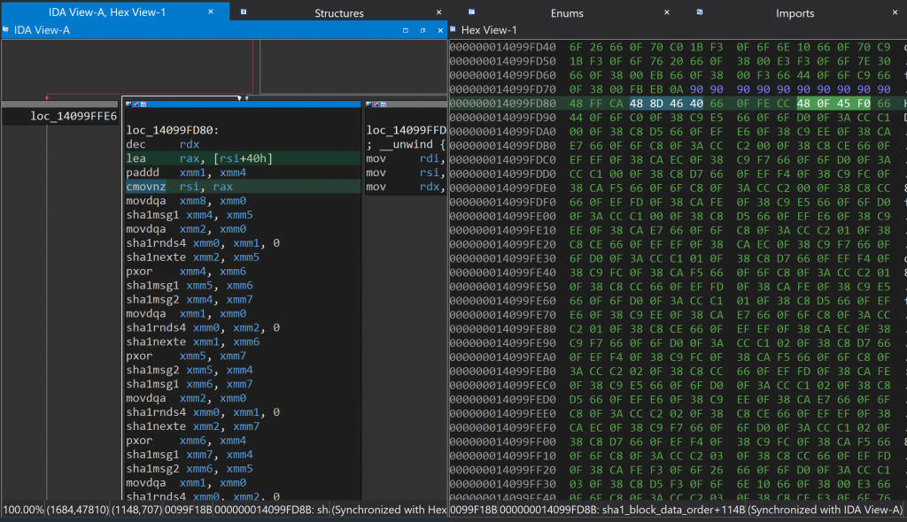

This document describes steps taken to binary patch a crash that was occurring in Besiege (Microsoft Store, 64-bit) and the 64-bit Unity Editor.
💡 Source code is available on GitHub: https://github.com/eamonwoortman/openssl-universal-patcher/
Introduction 📖
At the time of writing, we are trying to deploy a new update for Besiege on the Xbox PC/Microsoft Store platform.
However, a couple of users have reported that the game doesn't open or crashes immediately. The crash logs that we received all contained the last stack trace line:
invalid_pointer_read_c0000005_besiege.exe!sha1_block_data_orderAfter troubleshooting, we narrowed the problem down to our workshop integration (Mod.io). It was trying to establish an HTTPS connection through the UnityWebRequest.
Besiege was built with the older 64-bit 5.4.0f3 Unity version, which used the 1.1.0-dev OpenSSL library. It appears that in the Unity 5.4.0f3 Editor, and builds made with it, there's a bug where apps that use OpenSSL (i.e., secure web request) crash for users with specific hardware specifications, specifically 10th Gen and 11th Gen Intel CPUs.
One of our team members actually had one of these Intel models, and not only did the game build crash, but the 64-bit 5.4.0f3 Unity Editor also crashed upon launching.
A Reddit user called 'shishire' and commenters have already described the problem in this topic:
The actual failure going on here on 64-bit is happening in a dll called MctsInterface.dll, and it's occurring during a pointer dereference to a floating point number that tries to access memory that's outside the bounds of what's actually available to the application. That being said, one of the things I noticed is that the function this is a part of does a whole bunch of sha1sum operations in cpu-space.
Additionally, Intel has released a short article about the issue. You can read their article for more information and additional workarounds.
Existing Workaround
There's a workaround to the crash that involves setting an environment variable on the system:
- Open the Control Panel and navigate to System and Security > System > Advanced system settings.
- Click on the Environment Variables button.
- Under System Variables, click on New and enter:
- Variable name:
OPENSSL_ia32cap - Variable value:
~0x20000000
- Variable name:
- Click OK to save the changes.
Patching Motivation
Although this workaround might work for some users, it is not a permanent fix. Requiring users to change system environment variables does not provide a great user experience, so we sought a way to patch our game.
My patching journey 🩹
Attempt #1: Calling SetEnvironmentVariable ❌
I first set out to try to replicate the environment variable workaround through code. C# has Environment.SetEnvironmentVariable(). So I used it to set OPENSSL_ia32cap to ~0x20000000.
However, the game was still crashing. The OpenSSL initialization is part of the native Unity player and is already initialized before the mono domain is created.
Attempt #2: Binary patching ❌
I looked up the OpenSSL repository and found a function called OPENSSL_cpuid_setup in cpuid.c. This function is responsible for initializing the OpenSSL library.

OPENSSL_cpuid_setup functionMy options were to patch that method to always unset the 0x20000000 value, but I would need more instructions than were present. Because I have limited assembly/cracking experience, I decided to look for alternatives.
Attempt #3: Binary patching (2) ✅
I stumbled upon the fix that OpenSSL did in their 1.0.2L patch.

This patched a function called sha1_block_data_order_shaext, the Intel-specific implementation of the SHA1 function. The same function where the crashes occurred.
Finding the instructions to patch
I opened the patched OpenSSL lib in IDA and looked up the sha1_block_data_order_shaext function.

sha1_block_data_order_shaext function with patched instructionsThe patched instructions were:
lea r8, [rsi+40h]
...
cmovnz rsi, r8To find the unpatched version in our game binary, we reverse the patch:
lea rax, [rsi+40h]
...
cmovnz rsi, raxMatching the patch instructions in our game
In IDA, I opened our game binary and found the corresponding instructions.

I asked ChatGPT for the corresponding bytes:
# lea rax, [rsi+40h]
48 8D 46 40
# cmovnz rsi, rax
48 0F 45 F0This matched what we saw in the Hex View! GPT also gave me the patch diff:
-- First sequence --
# lea rax, [rsi+40h]
original: 48 8D 46 40
# lea r8, [rsi+40h]
patched: 4C 8D 46 40
-- Second sequence --
# cmovnz rsi, rax
original: 48 0F 45 F0
# cmovnz rsi, r8
patched: 49 0F 45 F0Writing a patcher program ✍️
IDA uses fixed memory offsets which change with code updates. We needed something more clever.
BSDiff / BSPatch
I used bsdiff (.NET port) to create a diff between the old and patched binary. I implemented the patcher in our build pipeline.
Writing our own patcher
We only have to patch 2 bytes total. The patching information is stored in a single text file:
# lea rax, [rsi+40h]
original: 48 8D 46 40
# lea r8, [rsi+40h]
patched: 4C 8D 46 40
# 4 bytes from the previous instruction
offset: 4
# cmovnz rsi, rax
original: 48 0F 45 F0
# cmovnz rsi, r8
patched: 49 0F 45 F0The C# patcher application:
- Loads the target binary as a byte array
- Parses the patch file
- Finds occurrences of the byte sequences (exactly one)
- Replaces with patched bytes
- Writes the patched file
Testing it 💯
| App | Engine | Patch compatible | Confirmed IDA | Confirmed Hardware |
|---|---|---|---|---|
| Besiege | Unity v5.4.0f3 | ✅ | ✅ | ✅ |
| Unity Editor | Unity v5.4.0f3 | ✅ | ✅ | ✅ |
| Test Game | Unreal 4.21.2 | ✅ | ✅ | ❌ |
Conclusion 🏁
With a little bit of effort, we were able to repurpose the existing OpenSSL library patch into an all-purpose, universal binary patch. All code is available for free on GitHub:
https://github.com/eamonwoortman/openssl-universal-patcher/
If you found this even slightly useful or an interesting read, please consider buying me a coffee! 🙏
Resources
OpenSSL
- cpuid.c — The
OPENSSL_cpuid_setupfunction - OpenSSL 1.0.2L patch — Commit with the Intel-specific SHA1 fix
- OpenSSL repository
Tools
- bsdiff — Binary diffing tool
- bsdiff.net — .NET port
- IDA Free — Disassembler and debugger